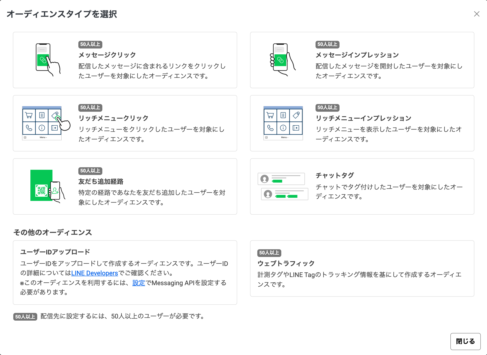

当日お話しする「導線設計の考え方」「タグ・フォーム連携の実装」「部分的にお願いいただく場合の進め方」を、先にこのページにまとめました。面談中もこの画面を共有しながらご説明します。
予約・来店・購入・問い合わせ・資料請求。複数あっても、このアカウントで一番増やしたいものを1つに絞ります。ここが2つ以上あると、リッチメニューもメッセージも焦点がぼやけます。
友だち追加の入口は1つではありません。店頭のPOP、Instagramのプロフィール、チラシのQRコード、広告。どこから来たかで知りたいことが違うので、あいさつメッセージを出し分けます。
全員に同じ配信を続けるとブロックが増えます。押した人・押さなかった人、予約した人・まだの人で、次に届く内容を変えます。この分岐が「タグ」と「オーディエンス」の役割です。
1通ごとに「開封→タップ→ゴール到達」のどれを見るかを先に決めます。決めておかないと、配信後に良かったか悪かったか判断できず、改善が感覚になります。
架空の整体院を題材に、あいさつ・自動診断・ステップ配信・予約リマインドまでを組んだデモです。トーク画面のイメージ、シナリオ設計図、配信設計表をご覧いただけます。
https://2g-q.github.io/hp-demos/line.html| 手段 | 何で分かれるか | 自動／手動 | 使うときの制限 |
|---|---|---|---|
| チャットタグ | チャット画面で友だちに付けたタグ | 手動で付ける (会話しながら) |
人数の下限なし。友だちが少ない立ち上げ期でも使える |
| 友だち追加経路 | どのQRコード・URLから追加したか | 自動 | 配信先に指定するには50人以上必要 |
| 行動 | メッセージやリッチメニューを開いた・押した | 自動 | 配信先に指定するには50人以上必要 |
| ユーザーIDの読み込み | 外部システム(フォーム等)から渡した名簿 | 自動 (仕組みを作れば) |
Messaging APIの設定が必要。SECTION 03 で説明します |
※ 2026年8月19日に LINE Official Account Manager の「オーディエンス作成」画面で確認した内容です。

まず前提として、LINE公式アカウントにフォームを作る機能はありません。管理画面で回答を集められるのは「リサーチ」というアンケート機能だけです(ほかに「拡張機能」がありますが、これは月額のかかる外部サービスの紹介欄です)。
そしてリサーチは、予約・問い合わせのフォームの代わりには使えません。管理画面に明記されている制限は次の2点です。
お名前・連絡先・希望日時を伺うフォームは、この規約に触れます。また回答が20件集まるまで結果を取り出せないため、少数のお客様を丁寧に扱う業種ほど使えません。リサーチは「好きな味はどれですか」のような、統計として集める用途に向いた機能です。
そのため個人情報を伴うフォームは Googleフォームを使います。追加の月額費用はかかりません。
Googleフォームの回答が入った瞬間に動く部分です。実際の案件では、フォームの項目名と分け方をヒアリングしてから調整します。
// Googleフォームに回答が入ると自動で実行される function onFormSubmit(e) { const ans = e.namedValues; const userId = ans['LINE_USER_ID'][0]; // 誰からの回答か const nayami = ans['お悩み'][0]; // 回答内容 // 回答ごとに名簿シートを分けて貯める const sheet = SpreadsheetApp .openById(SHEET_ID) .getSheetByName(nayami); // 「腰痛」「肩こり」… sheet.appendRow([userId, new Date()]); // LINEへ名簿を渡してオーディエンスを作る UrlFetchApp.fetch( 'https://api.line.me/v2/bot/audienceGroup/upload', { method: 'put', contentType: 'application/json', headers: { Authorization: 'Bearer ' + CHANNEL_TOKEN }, payload: JSON.stringify({ audienceGroupId: AUDIENCE_ID[nayami], audiences: [{ id: userId }] }) }); }
| 使うもの | 役割 | 料金 |
|---|---|---|
| LINE公式アカウント | 配信・リッチメニュー・タグ・自動応答 | 無料〜 配信数に応じたLINEの料金プラン |
| Googleフォーム | 個人情報を伴うフォームの受け口 | 無料 |
| Googleスプレッドシート | 回答の蓄積・名簿 | 無料 |
| Google Apps Script | 回答の振り分けとLINEへの連携 | 無料 |
| LINE Messaging API | 名簿からオーディエンスを作る | 無料 |
| 構築後にかかり続ける費用 | 0円 (LINEの配信プラン料金を除く) | |
※ 配信通数が多くなる場合はLINE公式アカウント側の料金プラン(ライト・スタンダード)が発生します。これはどのツールを使っても共通で、当方の構築とは別のLINE社への費用です。
月額制の外部ツールを使うと機能は増えますが、解約した時点で配信シナリオごと止まります。標準機能で組んでおけば、この先どなたが引き継いでも動き続けます。
| 作業 | お渡しするもの | 費用(税込) |
|---|---|---|
| ヒアリング・導線設計 | シナリオ設計図、配信設計表(目的とKPI) | 15,000円 |
| リッチメニュー制作 | デザイン1点、管理画面への設定まで | 12,000円 |
| ステップ配信 | 2〜3パターンの文面作成と設定 | 15,000円 |
| あいさつ・自動応答・タグ設計 | 入口別あいさつ、キーワード応答、タグ設計表 | 5,000円 |
| 公開前の動作確認・マニュアル | 実機での確認、運用マニュアル | 3,000円 |
| 標準構築 一式 | 50,000円 | |
上から順に依存しています。導線設計だけを外して他をお願いいただくことは可能ですが、その場合は設計方針を先にご共有ください。
下記は標準構築に含まれない作業です。分量が案件ごとに大きく変わるため、内容を伺ってからお見積りします。
| 作業 | 内容 | 費用 |
|---|---|---|
| フォーム連携の実装 | SECTION 03 の仕組み。Googleフォーム作成、GAS実装、オーディエンス連携、動作確認 | ご相談 |
| リッチメニュー追加 | 1点ごと(デザイン・設定込み) | ご相談 |
| ステップ配信の追加 | 1パターンごと | ご相談 |
| 公開後の運用 | 配信代行、数字のレポート、文面改善(月次) | ご相談 |
継続してのご対応が可能です。ご連絡はその日のうちにお返しします。オンラインでの打ち合わせにも対応できます。制作物は人の目で確認してからお渡しします。